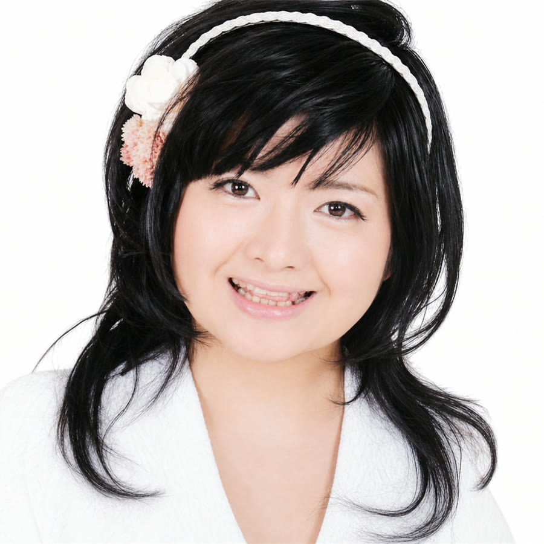
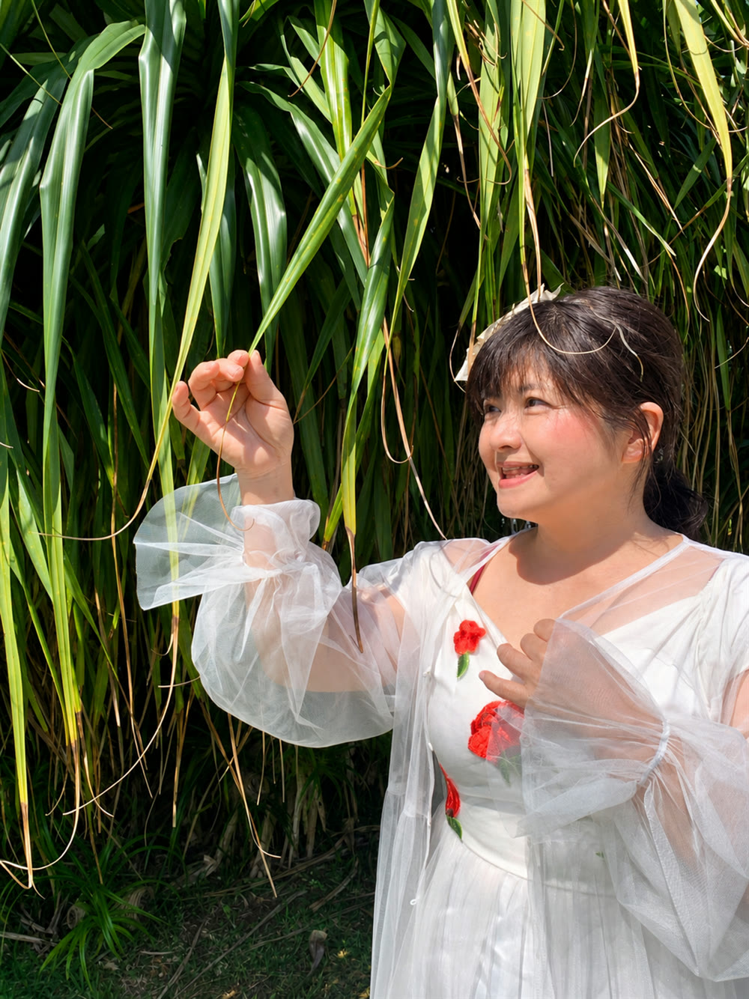

About
紫あゆなのこと
タイムマシーンに乗ってやってきた80年代のアイドル。沖縄で歌い、弾き、話し、教えています。

Message
聴いてくださる方の
まいにちに、寄り添って。
80年代のアイドルの曲には、あの頃のときめきがそのまま残っています。それを、いまの沖縄でお届けしています。
会場では、聴くだけでなく一緒に歌ったり手拍子をしたりできる時間をつくります。ウクレレやサンレレを持てば、小さなお子さんからご年配の方まで、同じ輪の中に入っていただけます。
紫あゆな
History
これまでの歩み
松田聖子さんの曲だけを
沖縄本島の全島で歌わせていただきました。この10年が、いまの土台になっています。
80年代のアイドルの曲、沖縄の歌へ
聖子さんの曲に加えて、80年代のアイドルの曲や沖縄の歌も歌うようになりました。歌える世界が広がった時期です。
ウクレレを習いはじめました
歌いながら弾けるようになり、アイドルとしての新しい魅力が見つかりました。
サンレレでシマ歌も
サンレレも習いはじめ、ウクレレとサンレレでシマ歌を弾き語ります。ラジオの番組を担当し、子どもたちに英語も教えています。
Three Pillars
3つの柱で活動しています
歌ライブ・イベント出演。月に1回以上、どこかの会場で歌っています
エンタメと教育子ども向けのイベントと、英語の教室。楽しいところから入ります
ラジオオキラジ・FM読谷・FMコザの3局でパーソナリティを務め、ゲストのお話と地域の情報をお届けしています
Next
これからの活動
歌う場所を増やしながら、子どもたちと英語で過ごす時間も広げていきます。
- 英語教室— ご家庭でのレッスンと、園でのレッスンを続けています
- 学校訪問— 学校へうかがって、歌と英語の時間をつくりたいと思っています
- 保育園— 園のみなさんと、遊びながら英語にふれる時間を
「英語難民」をつくりたくない、というのが根っこにある気持ちです。社会に出てからも英語からは逃げられないからこそ、少しでもできる子、好きになる子を増やしたいと思っています。
